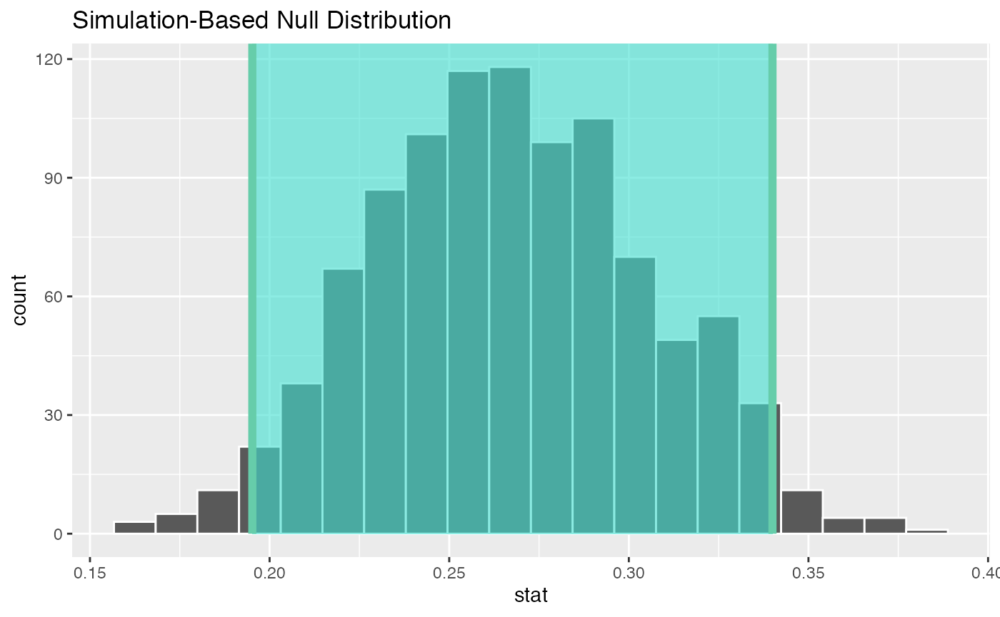
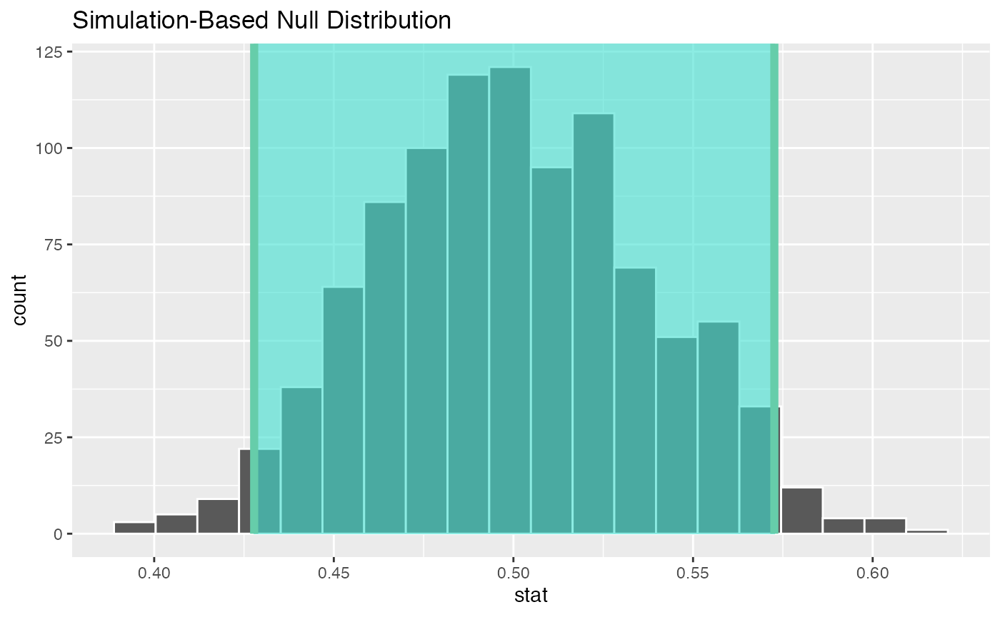

infer.RmdThe most useful verbs in infer to ply with statistical inference are:
specify() specifies the variable, or relationship between variables, of interesthypothesize() declare the null hypothesis. It can be independence of two variables or a mean number.generate() generates resamplescalculate() calculates summary estatistics taking as input from hypothesize() or generate()Let’s generate some random datapoints with beta distribution
Let’s calculate the mean of this distribution
The problem at task is to determine which of those correlations is statistically significant.
null_distn <- transcript %>%
specify(response = cor) %>%
hypothesize(null = "point", mu = as.numeric(cor_mean)) %>%
generate(reps = 1000, type = "bootstrap") %>%
calculate(stat = "mean")We can get the confidence interval for a given ⍺ level.
percentile_ci <- get_confidence_interval(null_distn, level = 0.95)We can visualise those results with a nice ggplot object
visualize(null_distn,bins = 20) +
shade_confidence_interval(endpoints = percentile_ci)
My little wrapper for this particular task
simulator(numer=25, bins=20)